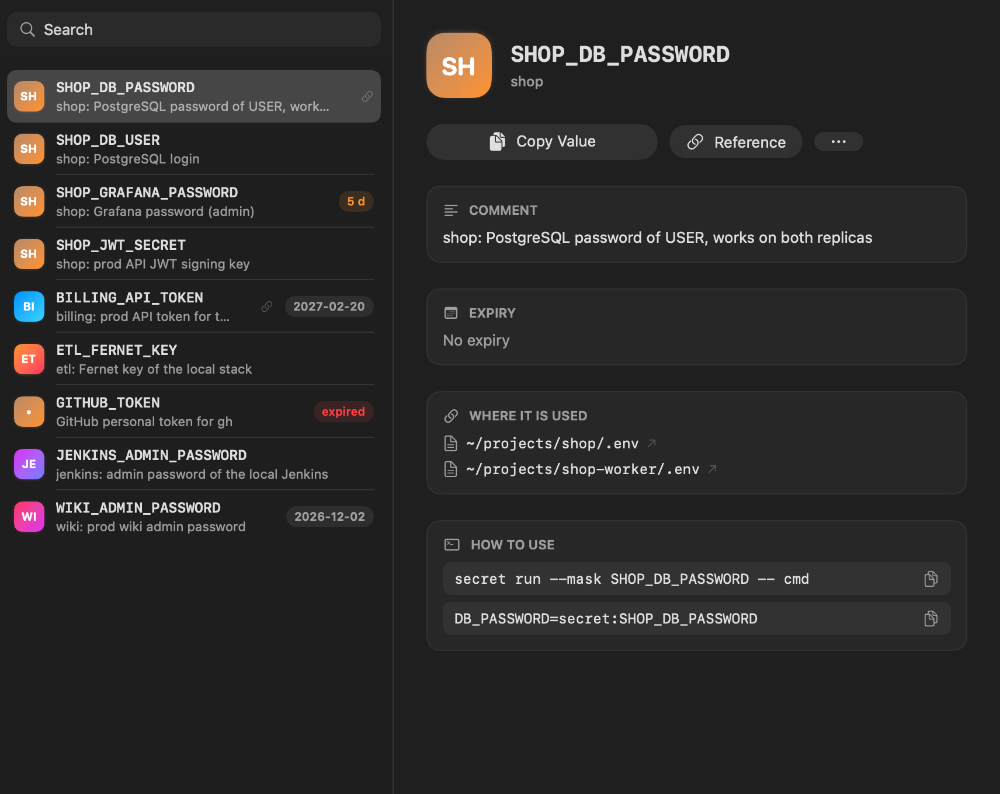
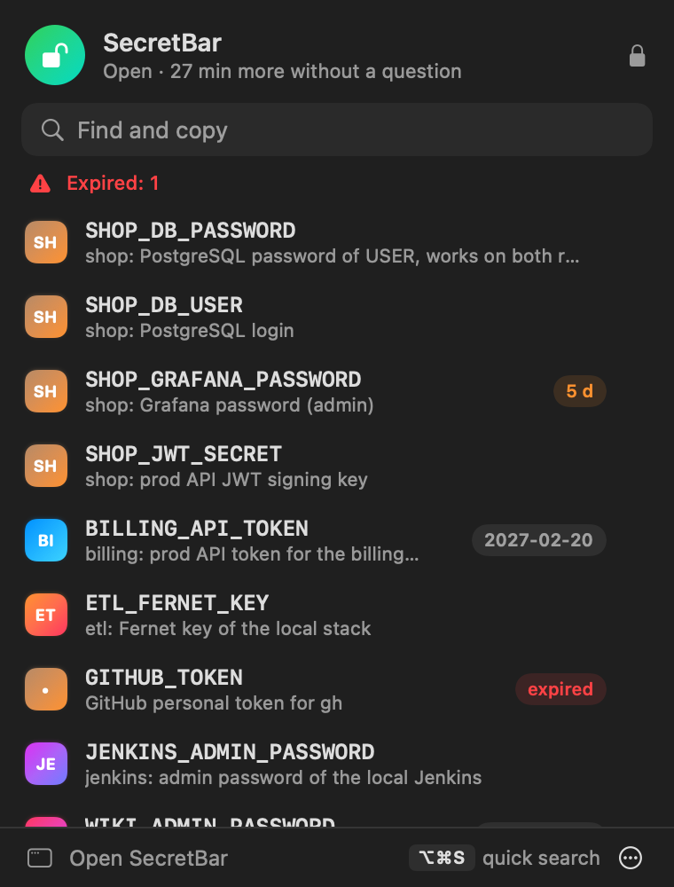
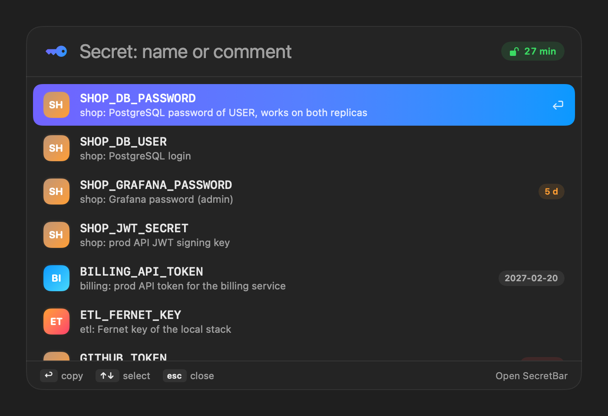

⌘
Hidden input
secret ask NAME opens a macOS dialog. You type the value; the agent gets stored: NAME. secret gen makes a random value that nobody sees.
$ secret gen -l 32 -c "shop: db password" SHOP_DB_PASSWORD
stored: SHOP_DB_PASSWORD
macOS · Secure Enclave · Claude Code
secret keeps passwords, tokens and API keys in the Secure Enclave of your Mac.
The agent works with names. The values go straight into the process that needs them,
and come back as ***.
brew install andrewkomkov/secret/secret
How it works
On write and on read. The agent asks for a secret by name; a human types or confirms; the process gets the value; the output comes back masked.
***What the agent sees
$ secret ls -l SHOP_DB_PASSWORD shop: PostgreSQL password BILLING_API_TOKEN billing: prod API token GITHUB_TOKEN GitHub token for gh $ secret run --mask GITHUB_TOKEN -- gh api user { "login": "you", "token": "***" }
What the process gets
GITHUB_TOKEN=ghp_•••••••••••••••••••••••••••••••• # only in the environment of gh, # only after Touch ID, # never in argv, never in the chat.
Features
secret ask NAME opens a macOS dialog. You type the value; the agent gets stored: NAME. secret gen makes a random value that nobody sees.
$ secret gen -l 32 -c "shop: db password" SHOP_DB_PASSWORD
stored: SHOP_DB_PASSWORD
run --mask replaces each value with *** in stdout and stderr, also in base64 and URL encoding. Always on under Claude Code.
Stops secret get, cat .env, security … -w and env inside run before they start.
cat .envBlocked by secret-clisecret gh NAME -R owner/repo pushes a value to gh secret set through stdin, after you confirm it.
TOKEN=secret:MY_TOKEN in your .env. secret import moves an existing file; secret check shows what is missing.
Who read which secret and when: agent or human. Names only.
2026-10-23 09:12 run agent SHOP_DB_USER SHOP_DB_PASSWORD psql 2026-10-23 09:40 copy human BILLING_API_TOKEN 2026-10-23 10:02 gh agent DEPLOY_KEY -R acme/shop
-x 2026-12-31 marks a token that expires; secret ls --expiring and SecretBar remind you. secret export writes one AES-256 file for a new Mac.
SecretBar
⌥⌘S from any app, Spotlight and Shortcuts, a card for each secret with the .env files that use it. The app never reads a value: the helper puts it on the clipboard and clears it after 30 seconds.



secret:NAME is on your clipboardSecurity
Dialog input, generation, masked output, the hook.
A value inside a custom encoding, for example base64(user:pass).
psValues go through stdin and file descriptors.
set NAME VALUE with the value as an argument.
The Secure Enclave key works only after Touch ID or Apple Watch, for any process with any signature.
Inside the grace window. It slides: 30 idle minutes, 8 hours at most; a screen lock or sleep ends it.
secret export: AES-256, PBKDF2 600 000 iterations.
Nobody can recover a forgotten backup password.
Install
brew install andrewkomkov/secret/secretsecret init && secret ask MY_TOKEN"$(brew --prefix secret)/libexec/install.sh" --claude-hook --appmacOS only. The command needs nothing beyond the system tools. SecretBar needs Xcode to build.